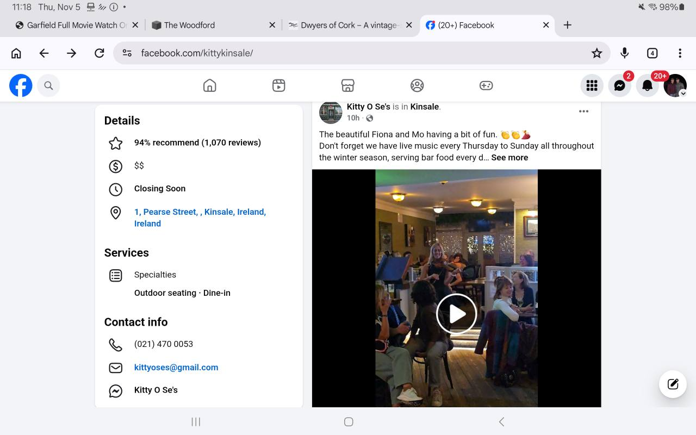
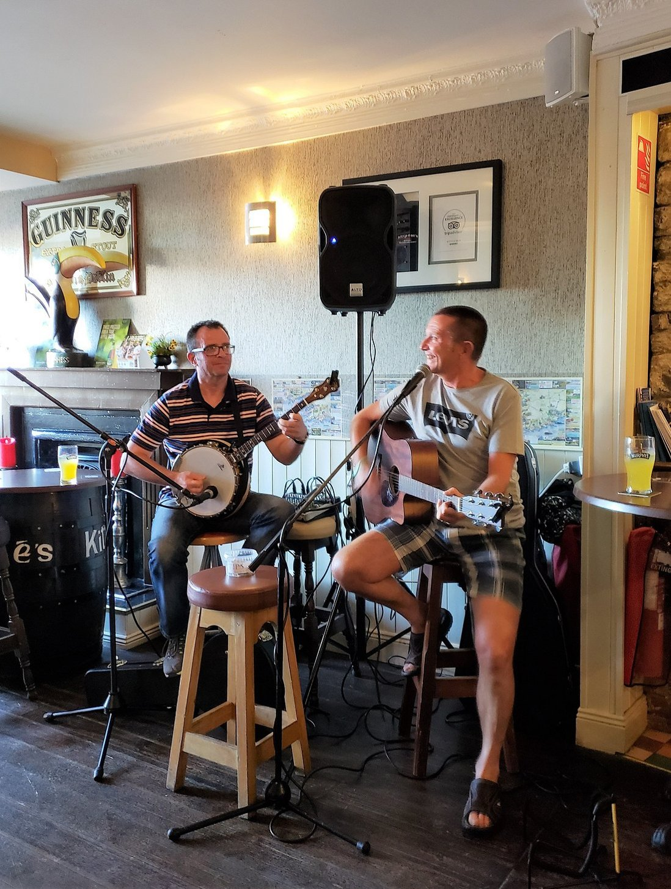
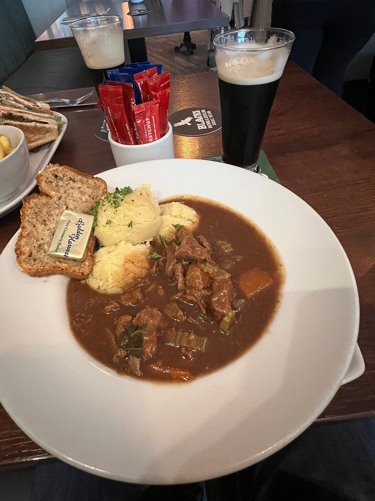
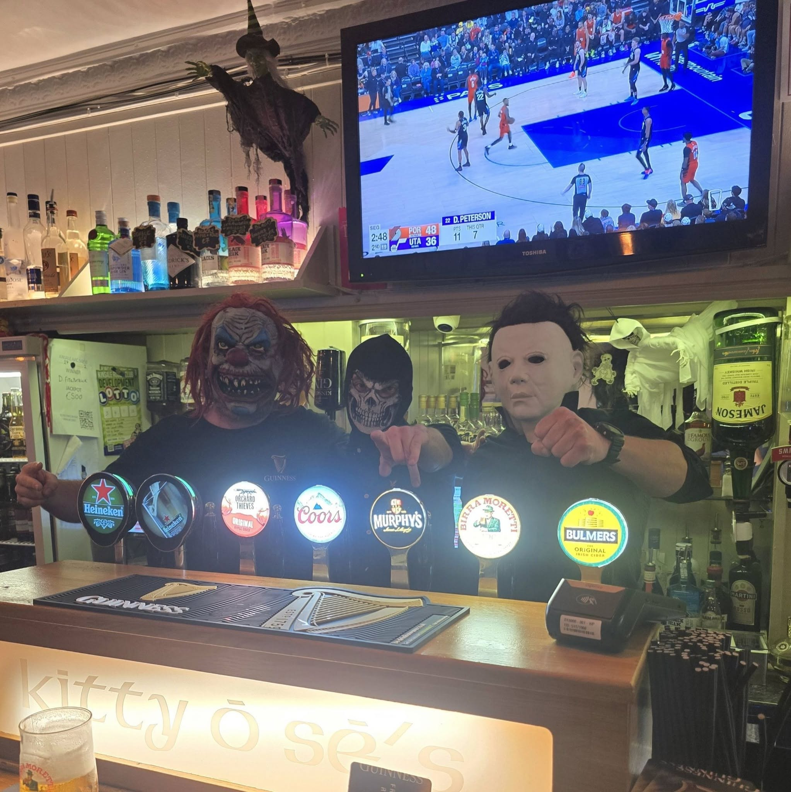
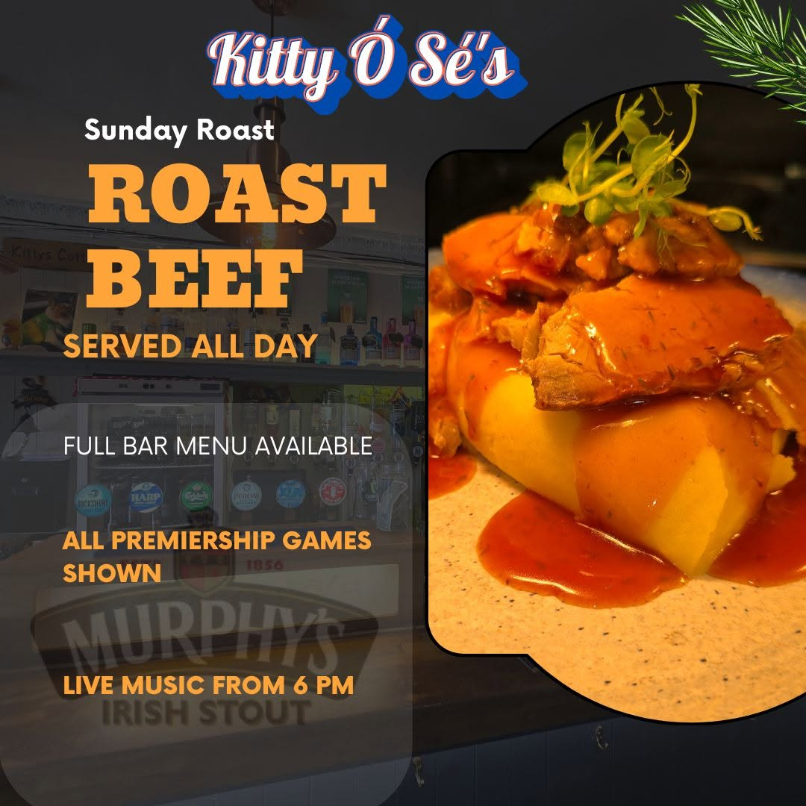
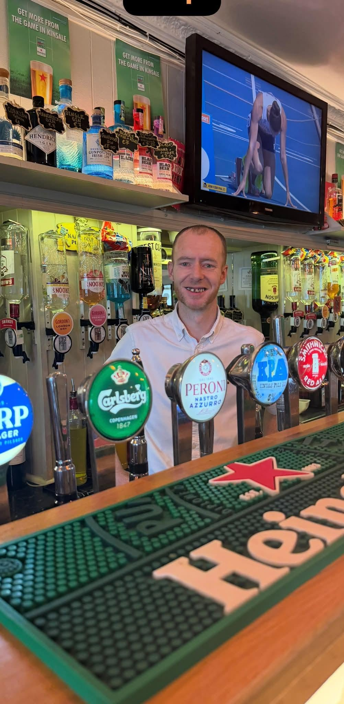

Kitty Ó Sé’s
Music reel
The beautiful Fiona and Mo having a bit of fun. Don't forget we have live music every Thursday to Sunday…

Watch reel on FacebookKitty Ó Sé’s · Kinsale
Come for lunch. Make an evening of it.
A traditional Irish pub on Pearse Street.


Food
Irish bar food, with daily specials alongside the menu. Speak to the team about dietary requirements or allergies.
Music
“Never a dull night”
“Great place for live traditional music. You can always find live music and a cold pint.”
Music every night from March to November, with fewer sessions over winter.
See what’s onFrom Facebook
Facebook postsSelected posts from Kitty Ó Sé’s. Check Facebook for the latest news and timings.
Music reel
The beautiful Fiona and Mo having a bit of fun. Don't forget we have live music every Thursday to Sunday…

Watch reel on Facebook31 October 2026 · Halloween
Be sure to call in for some spooky fun and halloween shots tonight!…

View post on Facebook27 September 2026 · Daily specials
Be sure to call in if in town today.we've got delicious roast loin of pork on all day…
View post on Facebook13 September 2026 · Sunday roast
SUNDAY ROAST: Roast Beef…

View post on Facebook11 August 2026 · Dave’s anniversary
Happy 12th anniversary to Dave Tynan our bar manager…

View post on Facebook26 July 2026 · All-Ireland final
Best of luck to the Kerry team today!! Watch the game with us here @ 3.30 pm…
View post on FacebookScroll sideways to see more posts
Visit